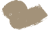

Проектный семинар «Сбор и систематизация данных на примере территорий жилой застройки»
Модуль 1 · занятие 4
26
Образовательная программа:
Городское планирование
Средовой анализ придомовых территорий: проблемы и предпосылки
Коньково, территория №2 · Команда 2
Команда 2
Москва 2026
Проектный семинар · модуль 1
Занятие 4
сл.1
Команда
01
02
03
04
05
06
01
Степанов Вадим
оформление и дизайн, QGIS, AutoCAD, итоговое оформление презентации
02
Разумов Никандр
QGIS, AutoCAD, таблицы, доработка идей
03
Татулин Никита
оформление, QGIS, AutoCAD, таблицы
04
Абдрахимов Рашит
QGIS, таблицы, доработка идей
05
Бартенев Кирилл
полевой выход и фото, таблицы, анализ
06
Кудинова Софья
тимлид: QGIS, таблицы, обстановка в команде
Средовой анализ придомовых территорий жилой застройки
Команда 2
Москва 2026
Проектный семинар · модуль 1
Занятие 4
сл.2
0
500
1000 м
Наша территория
м. «Беляево»
31 га
площадь территории
52
ячейки — единицы анализа
91
здание, по 46 есть паспорт
28 из 30
домов с известным материалом стен — панельные
Коньково, территория №2
Квартал между Профсоюзной улицей и улицами Миклухо-Маклая, Генерала Антонова и Введенского. Один из выходов метро «Беляево» открывается прямо на территорию, поэтому через дворы постоянно идут люди к метро и обратно.
Застройка типовая: 30 из 38 домов с известной датой построены в 1968–1974 годах — девятиэтажки серий II-57 и 1605-АМ и башни в 12–17 этажей. Внутри квартала — две школы, детский сад и большие открытые дворы между длинными домами.
Средовой анализ придомовых территорий жилой застройки
Команда 2
Москва 2026
Вступление
Проектный семинар · модуль 1
Занятие 4
сл.3
Что искали и как считали
Задача занятия 4 — найти на придомовых территориях нарушения по 11 пунктам методики, понять, где они скапливаются, и что в квартале уже работает и может стать опорой.
01
Данные
Полевой выход с QField, топооснова, чертёж ячеек v9. Свели всё в слои ГИС и проверили геометрию.
02
Ячейки
Квартал разбит на 52 ячейки по домам, заборам и дорожкам. В анализе 42 — дворы и полосы с подъездами.
03
Анализ слоёв
Комфорт, входы, здания, покрытия, сети, потоки, контроль и освоенность — каждый слой даёт часть пунктов.
04
11 пунктов
Для каждой ячейки проверили 11 пунктов: нарушен или нет. Пороги взяли из методики или задали сами.
05
Сводный счёт
Счёт ячейки — число нарушенных пунктов. По нему три класса: низкий, средний, высокий.
06
Проблемы и опоры
Нашли ядро проблемных дворов, проверили устойчивость счёта и собрали предпосылки развития.
42
ячейки в анализе
11
пунктов проверки
156
нарушений во всех ячейках
8
ячеек с высоким счётом
Средовой анализ придомовых территорий жилой застройки
Команда 2
Москва 2026
Вступление
Проектный семинар · модуль 1
Занятие 4
сл.4
Полевой выход и данные
Объект
Точек
Бортовой камень
92
Здания
65
Входы во дворы
61
Откосы
58
Ограждения
34
Подпорные стенки
18
Прочее
9
Всего
341
Что сделали на месте
Обошли квартал с QField: отметили входы, заборы, откосы, бортовой камень и здания — 341 точка и 282 фотографии. В субботу считали пешеходов на 25 точках, эти замеры легли в карту потоков.
Полевые точки свели с топоосновой и чертежом ячеек: из чертежа взяли озеленение, площадки и стоянки, остальное — по нашим слоям.
фото: въезд во двор
фото: откос у дома
фото: ограждение школы
фото: арка в доме
Средовой анализ придомовых территорий жилой застройки
Команда 2
Москва 2026
Вступление
Проектный семинар · модуль 1
Занятие 4
сл.5
11
11 пунктов проверки
Каждую ячейку проверяли по 11 пунктам методики занятия 4 — от формы двора до контроля и заброшенности. Пункт либо нарушен, либо нет.
Счёт ячейки — число нарушенных пунктов, от 0 до 11.
Классы ячеек
0–3
низкий
4–5
средний
6 и больше
высокий
Пункт
Что проверяем
Правило для ячейки
Ячеек
1.1
Форма и размеры двора
Балл комфорта ниже 0,67
28
1.2
Неорганизованный узел входа
Неоформленный вход до 8 м от ячейки
16
1.3
Территория вне границ двора
Ячейка вне зафиксированных границ
8
1.4
Изношенное здание
Здание с износом от 40 % до 8 м от ячейки
30
2.1
Загрузка с заездом грузовиков
Зоны загрузки от 50 м² в ячейке
15
2.2
Опасный открытый объект
Опасный объект до 6 м от ячейки
12
2.3
Совмещение транзитных потоков
От 20 м общего проезда с высокой нагрузкой
11
3.1
Транзит через двор
От 20 м высокого транзита у подъездов
7
3.2
Сервис с внешним транзитом
Магазин или сервис у людного транзита
1
3.3
Место поведения без присмотра
Площадка в ближней зоне вне контроля
1
3.4
Без контроля, спорная, заброшенная
Спорный контроль от 5 %, без контроля от 50 % или заброшено от 25 %
27
Средовой анализ придомовых территорий жилой застройки
Команда 2
Москва 2026
Вступление
Проектный семинар · модуль 1
Занятие 4
сл.6
Ячейки и границы анализа
Квартал разбит на 52 ячейки — участки между домами, заборами и дорожками. В анализ вошли 34 ячейки в зафиксированных границах дворов и 8 полос вдоль улиц, куда выходят подъезды (№ 14, 15, 22, 28, 29, 39, 47, 51). Ещё 10 краевых полос — вне анализа.
0
100
200 м
Легенда
полосы с подъездами (8)
ячейки в границах двора (34)
вне границ двора
исключённые участки
Ячейка — единица счёта: все 11 пунктов проверяем для каждой из 42 ячеек.
Средовой анализ придомовых территорий жилой застройки
Команда 2
Москва 2026
01 Пространство
Проектный семинар · модуль 1
Занятие 4
сл.7
Входы во дворы
Вход — место, где улица переходит во двор: арка, ворота, калитка, разрыв в застройке или въезд. Организованный вход заметно оформлен — высокая или средняя степень фиксации.
0
100
200 м
организован
не организован
внутренний проход
арка
ворота
калитка
разрыв в застройке
въезд
разрыв в насаждениях
не зафиксирован
ограждения
вне границ двора
62
внешних входа
30
не организованы
по способу фиксации: организовано / нет
въезд
2 / 16
не зафиксирован
0 / 10
разрыв в застройке
9 / 1
арка
9 / 0
ворота
6 / 0
калитка
6 / 0
разрыв в насаждениях
0 / 3
Вывод
Плохо оформлены въезды: 16 из 18 — просто проезжая часть, их считаем неорганизованными (допущение). С узлами у подъездов это 27 неорганизованных узлов в 16 ячейках — пункт 1.2.
Средовой анализ придомовых территорий жилой застройки
Команда 2
Москва 2026
01 Пространство
Проектный семинар · модуль 1
Занятие 4
сл.8
Комфорт ячеек: три критерия
Комфорт двора оцениваем по трём критериям методики, за каждый — 0, 1 или 2 балла. Пороги: пропорции 0,6 / 1,4 / 2,0, замкнутость 0,35 / 0,65, размер — до 140 м.
Пропорции
Высота домов к ширине двора. Большинство дворов слишком широкие для своих домов.
2
высокие
19
средние
21
низкие
Замкнутость
Доля границы двора, закрытой домами и заборами. Чаще двор закрыт наполовину.
5
высокая
28
средняя
9
низкая
Размер
Двор до 140 м в поперечнике «читается» целиком. Больше — у трети ячеек.
28
до 140 м
14
больше 140 м
Средовой анализ придомовых территорий жилой застройки
Команда 2
Москва 2026
01 Пространство
Проектный семинар · модуль 1
Занятие 4
сл.9
Комфортных дворов — 14 из 42
Балл ячейки — сумма трёх критериев, делённая на 6. Комфортной считаем ячейку с баллом от 0,67, то есть две трети возможного.
0
100
200 м
комфортная
некомфортная
вне анализа
14
комфортных ячеек из 42
балл каждой ячейки, по убыванию
0,67
Вывод
Проигрывают большие открытые дворы между длинными домами: низкие пропорции и большой размер одновременно. Неудобная форма двора (п. 1.1) — у 28 ячеек.
Средовой анализ придомовых территорий жилой застройки
Команда 2
Москва 2026
01 Пространство
Проектный семинар · модуль 1
Занятие 4
сл.10
0
100
200 м
Износ зданий
0
100
200 м
Бизнес и тип зданий
Здания: износ и бизнес
В квартале 91 здание; по 46 есть паспорт — год постройки, серия, материал стен, этажность. Остальные — гаражи, павильоны и пристройки.
14
зданий с износом от 40 %
6 — по данным паспорта, 8 — наша оценка по году постройки и материалу стен. Среди них обе школы и детский сад.
51
объект бизнеса
19 встроенных, 27 встроенно-пристроенных, 5 отдельно стоящих. 46 из 51 обслуживают жителей.
Износ (карта сверху)
40 % и более
менее 40 %
нет данных
Бизнес и здания (снизу)
встроенный
встроенно-пристроенный
отдельно стоящий

жилое
нежилое
смешанное
без данных
Вывод
Износ — самый частый пункт: изношенное здание рядом у 30 ячеек из 42 (п. 1.4). Но 8 из 14 зданий — наша оценка, её стоит проверить.
Средовой анализ придомовых территорий жилой застройки
Команда 2
Москва 2026
01 Пространство
Проектный семинар · модуль 1
Занятие 4
сл.11
Озеленение, стоянки и загрузка
Озеленение и стоянки взяли из нового чертежа ячеек и разделили по-старому: газон и деревья. Стоянки сверили с чертежом: 6 появились впервые, у 3 изменился контур.
0
100
200 м
Зоны загрузки
открытая
гаражи
вокруг здания-паркинга
здание-паркинг
открытая, найдена по чертежу
трава
деревья
18,9 га
газонов и деревьев — больше половины площади квартала
газон
11,3 га
деревья
7,6 га
21
стоянка, 1,5 га: 17 открытых, 2 гаражные, паркинг и площадка у него
Вывод
Зелени много, но стоянки и зоны загрузки у магазинов заходят во дворы с улиц и занимают проезды — это пункты 2.1 и 2.3.
Средовой анализ придомовых территорий жилой застройки
Команда 2
Москва 2026
02 Функции
Проектный семинар · модуль 1
Занятие 4
сл.12
Опасные объекты и загрузка
Опасный открытый объект — место, рядом с которым неприятно и небезопасно: мусорные площадки, пивные и алкомаркеты с выходом во двор. Мусорные площадки отнесли к опасным сами — это допущение команды.
0
100
200 м
мусорные площадки
бизнес: опасный
бизнес: нейтральный
бизнес: благоприятный
площадка: благоприятная
площадка: опасная
зоны загрузки
16
опасных открытых объектов, из них 14 — мусорные площадки
28
зон загрузки, 0,75 га — в 15 ячейках от 50 м²
фото: мусорная площадка у дома
Вывод
Опасный объект рядом — у 12 ячеек (п. 2.2). Без допущения про мусорки пункт остаётся в одной ячейке, а высоких ячеек становится 4 вместо 8. Это самое сильное допущение в анализе.
Средовой анализ придомовых территорий жилой застройки
Команда 2
Москва 2026
02 Функции
Проектный семинар · модуль 1
Занятие 4
сл.13
0
100
200 м
Пешеходная сеть
0
100
200 м
Транспортная сеть
Сети и нагрузка
Построили дерево кратчайших путей от каждого подъезда до выходов из квартала — пешком и на машине. Чем больше путей идёт по участку, тем он нагруженнее.
Длина сети, км
пешком
4,3 км
на машине
4,2 км
4 пути и больше
2–3 пути
один путь — подход к дому
Сеть пешком: высокая нагрузка — 1,1 км, низкая — 1,4 км, один путь — 1,8 км. На машине: 0,6 / 1,1 / 2,5 км.
Вывод
Высоконагруженные пешеходные участки — каркас, по которому люди реально ходят через квартал. Там, где на них же нагружен проезд, возникает совмещение потоков (п. 2.3).
Средовой анализ придомовых территорий жилой застройки
Команда 2
Москва 2026
02 Функции
Проектный семинар · модуль 1
Занятие 4
сл.14
Пешеходы на проезжей части
Тротуаров во дворах почти нет: из 4,3 км пешеходных путей 1,8 км идут прямо по проезду, 0,8 км — по тротуару вдоль проезда и 1,7 км — отдельно. Где высока нагрузка и людей, и машин, — совмещение потоков: 48 участков, 605 м.
0
100
200 м
Легенда
совмещение потоков (п. 2.3)
отдельно от проезда
по тротуару
по проезжей части
Пункт 2.3 нарушен в 11 ячейках: от 20 м общего проезда с высокой нагрузкой.
Средовой анализ придомовых территорий жилой застройки
Команда 2
Москва 2026
02 Функции
Проектный семинар · модуль 1
Занятие 4
сл.15
0
100
200 м
Потоки людей
0
100
200 м
Транзит
Потоки людей и транзит
В субботу считали пешеходов на 25 точках и пересчитали в человек в час. В будний день, по нашей оценке, людей в 2–3 раза больше. Транзит — пути, которые проходят через двор, не начинаясь у его подъездов.
Самые людные точки, чел./ч
точка 25
90
точка 1
61
точка 6
60
точка 3
47
точка 7
45
463
участка транзита: 315 пешеходных, 148 транспортных; 144 — с высокой загрузкой
поток высокий
поток средний
поток низкий
пешеходный, высокая
пешеходный, низкая
транспортный, высокая
транспортный, низкая
Вывод
Высокий транзит у подъездов — 1 046 м в 7 ячейках (п. 3.1): люди идут сквозь дворы под окнами.
Средовой анализ придомовых территорий жилой застройки
Команда 2
Москва 2026
03 Люди и контроль
Проектный семинар · модуль 1
Занятие 4
сл.16
0
100
200 м
Контроль жилых домов
0
100
200 м
Контроль общественных путей
Кто присматривает за двором
Контроль — окна и подъезды, из которых видно двор, и люди на дорожках. Активный — подъезды жилых домов в 30 м и людные пути, пассивный — торцы, фасады без подъездов и спокойные пути.
активный
пассивный
жилые дома
29
зон АЖ
96
зон ПЖ
общественные пути
18
зон АП
36
зон ПП
Вывод
Пассивного контроля много — 96 зон у жилых домов, активного мало: дворы видны из окон, но у входов и на площадках за ними почти не смотрят.
Средовой анализ придомовых территорий жилой застройки
Команда 2
Москва 2026
03 Люди и контроль
Проектный семинар · модуль 1
Занятие 4
сл.17
Половина свободной земли без присмотра
Сложили зоны контроля. Контролируемая земля — под активным контролем, частично — только под пассивным, неконтролируемая — вне всех зон.
0
100
200 м
конкуренция контроля
контролируемая
частично контролируемая
неконтролируемая
доля свободной территории
33 %
под контролем
11,0 га
18 %
частично
5,9 га
49 %
без контроля
16,5 га
22
зоны конкуренции, 1,5 га: активный контроль жилья и общественных путей спорит за одно место
Вывод
Центры больших дворов лежат дальше 30 м от подъездов. Пункт 3.4 нарушен в 27 ячейках: 17 — по доле неконтролируемой земли, 13 — по спорному контролю, 2 — по заброшенности.
Средовой анализ придомовых территорий жилой застройки
Команда 2
Москва 2026
03 Люди и контроль
Проектный семинар · модуль 1
Занятие 4
сл.18
0
100
200 м
фото: детская площадка в центре двора
Площадки
30 площадок общей площадью 1,2 га: 16 детских, 10 спортивных, 3 воркаут и одна для собак. Методика делит пространство вокруг подъезда на ближнюю зону (до 30 м) и среднюю (30–100 м).
2
28
30–100 м
до 30 м
29 из 30
площадок стоят на неконтролируемой земле
Нарушением (п. 3.3) методика считает только площадку в ближней зоне вне контроля — такая одна.
Площадка с проблемой
ближняя зона
средняя зона
Вывод
Площадки стоят в середине больших дворов, где за ними меньше всего смотрят из подъездов. Формально нарушение одно, по сути — почти все.
Средовой анализ придомовых территорий жилой застройки
Команда 2
Москва 2026
03 Люди и контроль
Проектный семинар · модуль 1
Занятие 4
сл.19
Освоенность дворов
Участок освоен, если он обустроен и используется. Обустроен — газон, деревья, покрытие или площадка; используется — у подъезда, у людной дорожки, на площадке или по нашим наблюдениям.
0
100
200 м
заброшенный участок (обход)
много людей
мало людей
откосы и подпорные стенки
освоенная
частично освоенная
неосвоенная (заброшенная)
не оценивается
используется
да
нет
обустроен
да
нет
11,7 га
освоено
4,9 га
частично
0,6 га
частично
0,5 га
заброшено
Вывод
Освоено 66 %, частично 31 %, заброшено 3 % — 0,5 га. Не оценивали 8,7 га: полосы вне ячеек анализа и узкие полосы до 5 м.
Средовой анализ придомовых территорий жилой застройки
Команда 2
Москва 2026
03 Люди и контроль
Проектный семинар · модуль 1
Занятие 4
сл.20
Двор живёт и без присмотра
Наложили контроль на освоенность: где земля обжита, где нет, и смотрит ли за ней кто-нибудь.
0
100
200 м
заброшенная
конкуренция контроля
неконтролируемая
освоенная и контролируемая
освоено
частично
заброшено
контроль
4,1 га
0,9 га
0,1 га
частично
2,9 га
0,3 га
0,0 га
нет контроля
4,6 га
4,3 га
0,4 га
Вывод
Неконтролируемой земли в ячейках 9,3 га, но заброшено из неё лишь 0,36 га: дворы используют и без активного присмотра. Освоенная и контролируемая земля — 4,1 га — главная опора.
Средовой анализ придомовых территорий жилой застройки
Команда 2
Москва 2026
03 Люди и контроль
Проектный семинар · модуль 1
Занятие 4
сл.21
Пространственно-планировочные проблемы
Самые частые нарушения квартала: изношенное здание рядом — в 30 ячейках, неудачная форма двора — в 28. Неорганизованные входы — 27 узлов в 16 ячейках; 8 ячеек лежат вне зафиксированных границ двора.
0
100
200 м
Легенда
28
1.1 неудачная форма двора
16
1.2 неорганизованный вход
8
1.3 вне границ двора
30
1.4 износ здания от 40 %
Число справа — ячеек с нарушением.
Средовой анализ придомовых территорий жилой застройки
Команда 2
Москва 2026
04 Проблемы
Проектный семинар · модуль 1
Занятие 4
сл.22
Функционально-планировочные проблемы
Загрузка с заездом грузовиков — 28 зон в 15 ячейках, опасные открытые объекты рядом — у 12 ячеек, совмещение пешеходных и транспортных потоков — 605 м в 11 ячейках. Почти всё — у домов с магазинами в первых этажах.
0
100
200 м
Легенда
15
2.1 загрузка с заездом грузовиков
12
2.2 опасный открытый объект
11
2.3 пешеходы и машины вместе
Число справа — ячеек с нарушением.
Средовой анализ придомовых территорий жилой застройки
Команда 2
Москва 2026
04 Проблемы
Проектный семинар · модуль 1
Занятие 4
сл.23
Социально-планировочные проблемы
Транзит у подъездов — 1 046 м в 7 ячейках; сервис с внешним транзитом и площадка без присмотра — по одной ячейке. Пункт 3.4 — неконтролируемая, спорная или заброшенная земля — нарушен в 27 ячейках и почти не различает дворы.
0
100
200 м
Легенда
7
3.1 транзит через двор
1
3.2 сервис с внешним транзитом
1
3.3 площадка без присмотра
2
3.4 заброшенная земля
17
3.4 неконтролируемая земля
13
3.4 спорный контроль
Число справа — ячеек; 3.4 считается по любому из трёх правил.
Средовой анализ придомовых территорий жилой застройки
Команда 2
Москва 2026
04 Проблемы
Проектный семинар · модуль 1
Занятие 4
сл.24
Сводный счёт: где проблем больше всего
Сложили нарушенные пункты по каждой ячейке. Всего 156 нарушений на 42 ячейки — в среднем почти четыре на двор.
0
100
200 м
высокий (≥ 6)
средний (4–5)
низкий (0–3)
вне анализа
8
высокий, 6+
11
средний, 4–5
23
низкий, 0–3
1.1
1.2
1.3
1.4
2.1
2.2
2.3
3.1
3.2
3.3
3.4
№28
9
№35
8
№11
7
№14
7
№6
6
№15
6
№29
6
№32
6
Вывод
Ячейка 28 нарушает 9 пунктов из 11, 35 — 8, 11 и 14 — по 7.
Средовой анализ придомовых территорий жилой застройки
Команда 2
Москва 2026
04 Проблемы
Проектный семинар · модуль 1
Занятие 4
сл.25
0
100
200 м
Проблемы планировки дворов: все пункты
1.1 неудачная форма двора
1.2 неорганизованный вход
1.3 вне границ двора
1.4 износ здания от 40 %
2.1 загрузка с заездом грузовиков
2.2 опасный открытый объект
2.3 пешеходы и машины вместе
3.1 транзит через двор
3.2 сервис с внешним транзитом
3.3 площадка без присмотра
3.4 заброшенная земля
3.4 неконтролируемая земля
3.4 спорный контроль
Средовой анализ придомовых территорий жилой застройки
Команда 2
Москва 2026
04 Проблемы
С чего начинать: четыре двора
Ячейки 28, 35, 11 и 14 остаются в высоком классе при любых порогах и даже если снять все допущения команды.
Ячейка 28
9 из 11
1.1 форма двора
1.2 неоформленный вход
1.3 вне границ двора
1.4 изношенное здание
2.1 загрузка
2.2 опасный объект
2.3 пешеходы на проезде
3.1 транзит у подъездов
3.2 сервис с транзитом
Ячейка 35
8 из 11
1.1 форма двора
1.2 неоформленный вход
1.4 изношенное здание
2.1 загрузка
2.2 опасный объект
2.3 пешеходы на проезде
3.1 транзит у подъездов
3.4 без контроля / спорный
Ячейка 11
7 из 11
1.1 форма двора
1.4 изношенное здание
2.1 загрузка
2.2 опасный объект
3.1 транзит у подъездов
3.3 площадка без присмотра
3.4 без контроля / спорный
Ячейка 14
7 из 11
1.1 форма двора
1.3 вне границ двора
1.4 изношенное здание
2.1 загрузка
2.3 пешеходы на проезде
3.1 транзит у подъездов
3.4 без контроля / спорный
Средовой анализ придомовых территорий жилой застройки
Команда 2
Москва 2026
04 Проблемы
Проектный семинар · модуль 1
Занятие 4
сл.27
Насколько надёжен счёт
Пороги и часть данных — наш выбор, поэтому проверили, как от них зависит результат: двигали каждый порог в обе стороны и снимали допущения по одному и все сразу.
Вывод
Ядро — ячейки 28, 35, 14 и 11 — не меняется. Сильнее всего на итог влияют допущения про мусорные площадки и износ зданий по нашей оценке.
Средовой анализ придомовых территорий жилой застройки
Команда 2
Москва 2026
04 Проблемы
Проектный семинар · модуль 1
Занятие 4
сл.28
На что опереться
Предпосылки — то, что в квартале уже работает: удобные дворы, обжитая земля под присмотром, оформленные входы и людные пешеходные оси.
0
100
200 м
организованный вход
благоприятный закрытый объект
людная пешеходная ось
освоенная и контролируемая земля
комфортная ячейка
14
комфортных дворов
4,1 га
освоенной земли под присмотром
27
организованных узлов входа
18
благоприятных закрытых объектов
фото: оформленный вход во двор
Вывод
Людные пешеходные оси и комфортные дворы — готовый каркас для общественных пространств. Проблемные ячейки стоит связывать с ними, а не перестраивать с нуля.
Средовой анализ придомовых территорий жилой застройки
Команда 2
Москва 2026
05 Предпосылки и выводы
Проектный семинар · модуль 1
Занятие 4
сл.29
Выводы
Что показал анализ 42 ячеек по 11 пунктам и что из этого следует для проекта.
01
Что чаще всего
Изношенные здания рядом — 30 ячеек, неудачная форма двора — 28, неконтролируемая или спорная земля — 27, неоформленные входы — 16. Это общая проблема квартала, а не отдельных дворов.
02
Где хуже всего
Ячейки 28, 35, 11 и 14 — от 7 до 9 нарушений и высокий класс при любых порогах. Ещё четыре — 6, 15, 29 и 32 — на границе высокого и среднего.
03
На что опереться
14 комфортных дворов, 4,1 га освоенной земли под присмотром, 27 организованных входов. Дворы обжиты даже без контроля: заброшено только 3 % земли.
04
Что зависит от нас
Мусорные площадки как опасные объекты и износ по нашей оценке дают заметную часть нарушений: без них высоких ячеек 4–5 вместо 8.
30
ячеек с изношенным зданием рядом
9 из 11
нарушений в ячейке 28 — максимум
3 %
земли заброшено — 0,5 га
4–5
высоких ячеек без допущений вместо 8
Средовой анализ придомовых территорий жилой застройки
Команда 2
Москва 2026
05 Предпосылки и выводы
Проектный семинар · модуль 1
Занятие 4
сл.30
Что дальше
Анализ проблем — первая часть занятия 4. Дальше — как нарушения связаны с контролем и освоенностью и что проверить на месте.
01
Связать проблемы с жизнью двора
Часть II занятия: как каждое нарушение меняет контролируемость и освоенность ячейки — и какие из них действительно мешают дворам.
02
Проверить на месте
Новые стоянки из чертежа, износ 8 зданий без данных, мусорные площадки — действительно ли они отталкивают людей.
03
Расставить приоритеты
Начать с ячеек 28, 35, 11 и 14, опираясь на комфортные дворы, оформленные входы и людные пешеходные оси.
Сначала — четыре двора с самым высоким счётом, затем — общие для квартала износ, форма дворов и контроль.
Средовой анализ придомовых территорий жилой застройки
Команда 2
Москва 2026
05 Предпосылки и выводы
Проектный семинар · модуль 1
Занятие 4
сл.31
Команда 2
Итоги в цифрах
01
42
ячейки в анализе
02
156
нарушений
03
4
двора — ядро проблем
04
4,1 га
освоенной земли под присмотром
фото: двор в Коньково
Спасибо
за внимание
Средовой анализ придомовых территорий жилой застройки